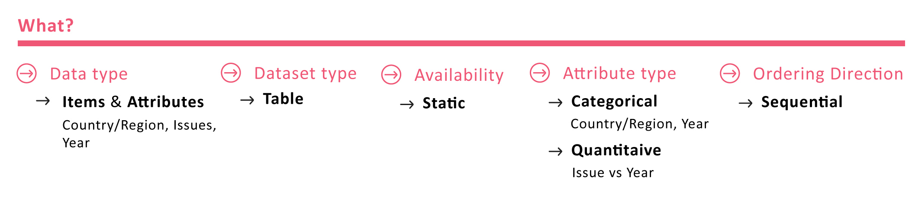

What: Data Abstraction
“Understanding the given dataset”
Many aspects of vis design are driven by the kind of data at our disposal. So, I started to gather sense of the mammoth data set given to us. The framework allowed me to do exactly that quite efficiently-

Understanding the data-set
“Understanding traders using context-scenario”
To understand how a trader might use the given data set, I drew up a story board highlighting a context of use. This allowed me to elicit the goals of a trader.

How might a trader use this dataset